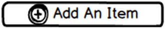

<ion-view title="Nutritional Breakdown">
  <ion-content has-header="true" padding="false">
  
  <br/>
  <div id="piechart" style="width: 400px; height: 300px;" pie-chart></div>
  <select name="num_people">
  <option value="1" selected>1</option>
  <option value="2">2</option>
  <option value="3">3</option>
  <option value="4">4</option>
  <option value="5">5</option>
  <option value="6">6</option>
  <option value="7">7</option>
  </select>
  </ion-content>
</ion-view>
